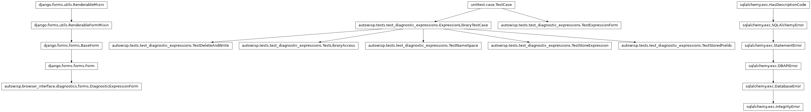
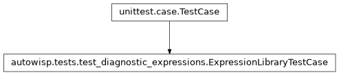
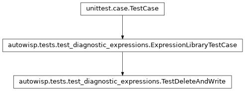
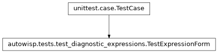
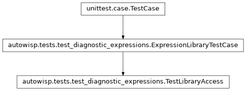
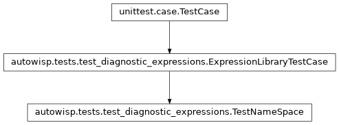
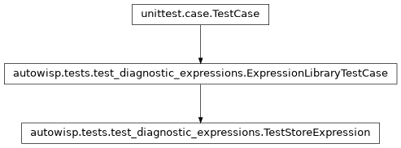
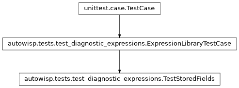

autowisp.tests.test_diagnostic_expressions module
Class Inheritance Diagram

Tests for the diagnostic expression library stored in a project.
The library is read and written through
autowisp.diagnostics.expression_library, against a throwaway project
database. What an expression means is tested where those rules live, in
the expression layer’s own tests; here it is only what gets stored, and
that references survive a rename.
The management form is tested here too, for the one check it makes itself rather than delegating: that a name is a slug and is not already taken.
- class autowisp.tests.test_diagnostic_expressions.ExpressionLibraryTestCase(methodName='runTest')[source]
Bases:
TestCase
Base creating one throwaway project, emptied before every test.
- static make(name, expression='astrom_residual[0] / diagonal_fov[0]', **kw)[source]
Store one expression, returning what the store reported.
- class autowisp.tests.test_diagnostic_expressions.TestDeleteAndWrite(methodName='runTest')[source]
Bases:
ExpressionLibraryTestCase
Deleting several, and writing an import’s worth at once.
- class autowisp.tests.test_diagnostic_expressions.TestExpressionForm(methodName='runTest')[source]
Bases:
TestCase
The name checks the management form makes itself.
- library = {'rel_bg': 'bg_center[0] - nanmedian(bg_center[0])'}
- class autowisp.tests.test_diagnostic_expressions.TestLibraryAccess(methodName='runTest')[source]
Bases:
ExpressionLibraryTestCase
What reading hands to the expression layer and to an export.
- class autowisp.tests.test_diagnostic_expressions.TestNameSpace(methodName='runTest')[source]
Bases:
ExpressionLibraryTestCase
Names have to behave like the diagnostic names they sit beside.
- test_name_is_unique()[source]
Two expressions cannot share a name.
The name is what a selector and a URL carry, and what other expressions and exclusion rules reference, so a duplicate would be ambiguous everywhere at once. The form refuses one first; this is the database guaranteeing it regardless.
- class autowisp.tests.test_diagnostic_expressions.TestStoreExpression(methodName='runTest')[source]
Bases:
ExpressionLibraryTestCase
Adding, replacing and renaming one expression.
- test_rename_carries_the_dependents()[source]
What referenced the old name references the new one.
Leaving them naming something that no longer exists would break them, and refusing the rename would not help: a dependent cannot be pointed at the new name before it exists.
- class autowisp.tests.test_diagnostic_expressions.TestStoredFields(methodName='runTest')[source]
Bases:
ExpressionLibraryTestCase
What the library keeps, and what it deliberately does not check.